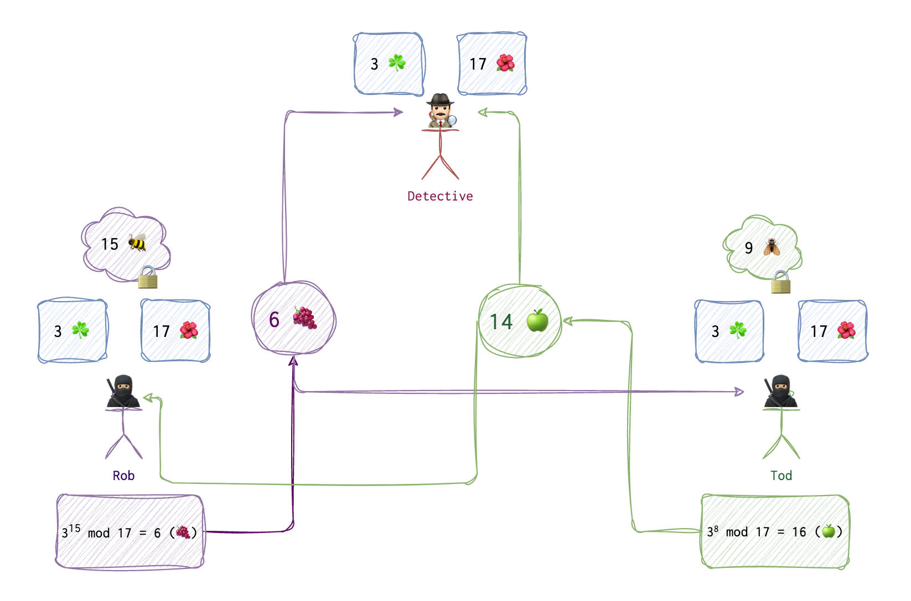

I’ve written this article while I was untanging RSA and Deffie Hellman inside my head. What I need to stree right here, in the article description, the main difference between them is the Deffie Hellman is NOT a encryption algorithm! It’s an algorithm of generating a symmetric key using principles of asymmetric cryptography.
For the mathmatics topics needed to understand this algorothm, please, refer to the math sections.
There is a peculiar characteristic of prime numbers 👑 and their respective primitive roots 🦷:
🦷 to the power of integers from 2 to 👑 mod 👑 will result in the list of all numbers between 🦷 and 👑 without repetiotions. Refer to the descrete logarithm problem for more information. What we want from this is that we know that we can produce unique outputs for our two numbers. Another useful thing about this operation is that it’s doesn’t take much computational power to get the result, but the reverse operation is not feasable when dealing with big integers.
So, say, we have 3 and 17. We can then raise 3 to the powers in range from 2 to 17 and get unique values in the range from 3 to 17. You can check this with the following one line of python: for num in range(1, 18): print(pow(3, num, 17)) or observe the magic in the table below:
| POWER | RESULT (3^Power MOD 17) |
|---|---|
| 1 | 3 |
| 2 | 9 |
| 3 | 10 |
| 4 | 13 |
| 5 | 5 |
| 6 | 15 |
| 7 | 11 |
| 8 | 16 |
| 9 | 14 |
| 10 | 8 |
| 11 | 7 |
| 12 | 4 |
| 13 | 12 |
| 14 | 2 |
| 15 | 6 |
| 16 | 1 |
| 17 | 3 |
Now, let’s assume that two thieves 🥷🏼 💭 🥷🏼 (Rob and Tod) want to generate and share a key 🔑 to be used later to encrypt their messages. They don’t want a detective 🕵🏻♂️ to evesdrop on their secret communication. But they also know that somewhere in their apartments there is a bug 🐞 and the line is being tapped, and everything they say is recorded and can be used by the police. They can’t meet, they can only talk over the phone. How do they communicate on a tapped line and share a key? This is where DH algo could be of use. For simplicity’s sake I will be using very small integers, but in reality these integers need to be really huge to make reversing nearly impossible.
📝 If you prefer videos, refer to the Khan Academy, I think there is nothing better yet invented on Earth when it comes to explaining complex topics.
On the first step, Rob and Tod agree on the two numbers: 3 ☘️ and 17 🌺. 🌺 is always a prime number and ☘️ is its primitive root. One can find primitive root using the following functions:
from math import gcd
def is_primitive_root(g, p):
factors = [i for i in range(1, p) if (p - 1) % i == 0]
for factor in factors:
if pow(g, factor, p) == 1:
return False
return True
def find_primitive_root(p):
for g in range(2, p):
if is_primitive_root(g, p):
return g
# Example: find the primitive root for prime number 23
p = 23
primitive_root = find_primitive_root(p)
print(primitive_root) # Output: 5
These two numbers ☘️ and 🌺 are shared and thus are visible to the detective 🕵🏻♂️. Both Rob and Tod also generate a number each (🐝 and 🪰), and they keep these numbers to themselves, Tod doesn’t know Rob’s number (🐝), and Rob doesn’t know Tod’s number (🪰). Now, both use the formula to generate their public numbers 🍇 and 🍏.

Here is the code I have written, to demostrate the internals of this algo:
def check_if_primitive_root(root, mod):
hash_table = {}
for i in range(1, mod):
tmp = root ** i % mod
if tmp in hash_table:
return False
else:
hash_table[tmp] = 1
return True
def check_if_prime(n):
if n == 1:
return False
if n <= 3:
return True
if (n % 2 == 0 or n % 3 == 0) :
return False
i = 5
while(i * i <= n) :
if (n % i == 0 or n % (i + 2) == 0) :
return False
i = i + 6
return True
class Victim:
__private_num = 0
__symmetric_key = 0
# __private_num and __symmetric_key are not accessible for MiM (Eve)
# arguments represent public data
def calculate_shared_step_one(self, public_num, public_generator):
return public_num ** self.__private_num % public_generator
def calculate_shared_step_two(self, others_pub_result, public_generator):
self.__symmetric_key = others_pub_result ** self.__private_num % public_generator
class MiM:
name = "Eve"
public_num = 0
public_generator = 0
bobs_first_res = 0
alices_first_res = 0
# all of our parties:
alice = Victim()
bob = Victim()
eve = MiM()
alice.private_num = 15
bob.private_num = 13
# public num should be a primitive root of public generator
print("Is {} a primitive root of {}? {}".format(3, 17, check_if_primitive_root(3, 17)))
eve.public_num = 3
# public generator must be a prime number
print("Is {} number a prime? {}".format(17, check_if_prime(17)))
eve.public_generator = 17
eve.alices_first_res = alice.calculate_shared_step_one(eve.public_num, eve.public_generator)
eve.bobs_first_res = bob.calculate_shared_step_one(eve.public_num, eve.public_generator)
print("Alice's Intermediate public result is {} ".format(eve.alices_first_res))
print("Bob's Intermediate public result is {} ".format(eve.bobs_first_res))
bob.calculate_shared_step_two(eve.alices_first_res, eve.public_generator)
alice.calculate_shared_step_two(eve.bobs_first_res, eve.public_generator)
try:
print("Bob's and Alice's private shared summetric key is {}".format(alice.symmetric_key))
except AttributeError:
print("Bob's and Alice's private shared summetric key is not accessible for Eve :-(")
#todo: step by step description
Elliptic Curve DF
A version of Diffie-Hellman.